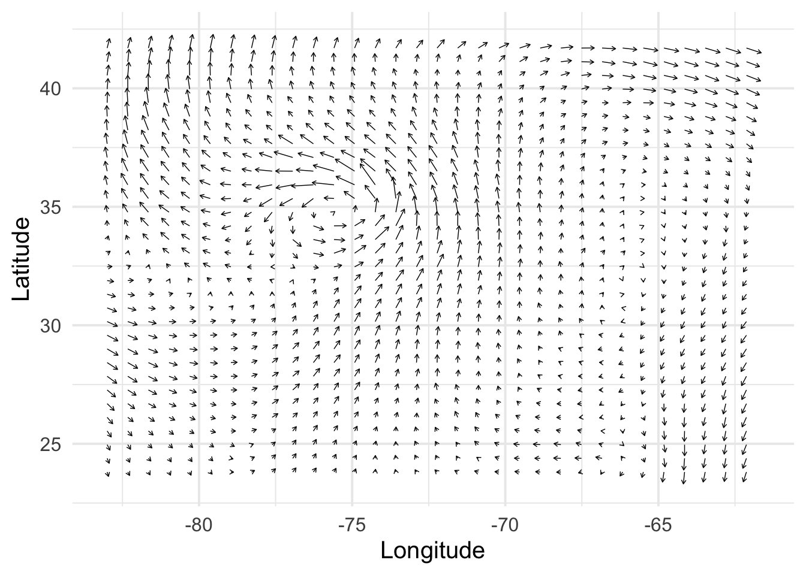

Elsewhere, I’ve discussed the multivariate normal distribution, and Gaussian processes. Introductory materials discussing Gaussian Processes (GPs) typically focus on univariate outcomes. In more formal notation, input data \(\mathbf{X} \in \mathbb{R}^{N \times P}\) is used to model \(\mathbf{y} \in \mathbb{R}^N\): \[
\begin{align*}
\mathbf{y} &= f(\mathbf{X}) + \mathbf{\epsilon} \text{ where } \\
f(\mathbf{X}) &\sim \mathcal{N}_N(\mathbf{0}, \mathbf{K}), \\
\mathbf{\epsilon} &\overset{\text{i.i.d.}}{\sim} \mathcal{N}(0, \sigma_y), \text{ and } \\
\mathbf{K} &= [k(x_i, x_j)]_{ij}^N.
\end{align*}
\]
Throughout this page, I’ll be using the subscript after \(\mathcal{N}\) to indicate we’re looking at a multivariate normal distribution, and to show the dimension of the vectors that the distribution produces.
While interesting univariate outcomes can be found in abundance, many physical systems and processes are better understood and represented as vectors. In this page, we’ll use the example of the velocity field of hurricane Isabel, which made landfall in 2003. Here is the description of the dataset, from the gcookbook package:
This example and dataset is drawn from The R Graphics Cookbook(Chang 2018), specifically chapter 13.12, on creating vector fields.
This data is from a simulation of hurricane Isabel in 2003. It includes temperature and wind data for a 2139km (east-west) x 2004km (north-south) x 19.8km (vertical) volume. The simluation data is from the National Center for Atmospheric Research, and it was used in the IEEE Visualization 2004 Contest.
Below I’ve plotted the x and y components of the storm’s velocity field, viewed at approximately 10km above sea-level. Each arrow shows the velocity of the storm’s winds at a given point in the x-y plane. In mathematical notation, we denote the velocity for a particular x-y point as a vector: \[
\mathbf{v} = \begin{bmatrix} v_x \\ v_y \end{bmatrix}.
\]
Velocity captures both the direction of the wind, and its magnitude (or strength). Here, longer arrows indicate higher measured speeds. If we wanted, we could plot wind-speed by itself over the area. However, looking only at speed would cause us to miss key dynamics of the phenomena we’re looking at, such as the storm’s spiral shape.
Code
library(tidyverse)library(gcookbook)library(scico)set.seed(123)eps <-sqrt(.Machine$double.eps)# Keep a subset in the middle of the the z-axisd_isabel <- isabel |>filter(z ==10.035) |>as_tibble()# Keep 1 out of every 'by' values in vector xevery_n <-function(x, by =4) { x <-sort(x) x[seq(1, length(x), by = by)]}# Keep 1 of every 4 values in x and ykeep_x <-every_n(unique(isabel$x))keep_y <-every_n(unique(isabel$y))# Keep only those rows where x value is in keepx and y value is in keepyd <- d_isabel |>filter(x %in% keep_x, y %in% keep_y) |>mutate(index =1:n())# Need to load grid for arrow() functionlibrary(grid)# Set a consistent plotting themetheme_set(theme_minimal(base_size =15))# Make a plot with the subset, and use an arrowhead 0.1 cm longp0 <-ggplot(d, aes(x, y)) +geom_segment(aes(xend = x + vx/50, yend = y + vy/50),arrow =arrow(length =unit(0.1, "cm")),linewidth =0.25 ) +labs(x ="Longitude", y ="Latitude")p0

A similar consideration applies to the task of predicting velocity using statistical models. A “naive” approach might be to build a model for each component of velocity. In our case, that would mean finding two functions, \(f_1: \mathbb{R}^2 \to \mathbb{R}\) and \(f_2: \mathbb{R}^2 \to \mathbb{R}\). This amounts to treating \(v_x\) and \(v_y\) as being independent of each other. Depending on context, this may be true according to scientific theory. However, when working with data provided via sensors and instruments, measurement error may move us away from the theoretical ideal.
An improved approach would allow us to incorporate natural information on how our observed target values (each \(v_x\) and \(v_y\)) might interrelate. The approach should also (ideally) account for the fact that we’re trying to predict a vector at a specific point. In other words, we’d like a single function, whose outputs are vector-valued:
These characteristics are possible within the framework of Gaussian Process Regression, with the goal of modeling multiple outputs simultaneously being referred to as “multioutput”, “multitask”, “cokriging”, or “vector-valued” GP regression. Alvarez, Rosasco, & Lawrence (2012) provides a technical introduction to some of these topics (Alvarez et al. 2012). In the following section, we’ll cover the theory behind the approach as it applies to our example data.
Theory and notation
We are working in the space of the two-dimensional real numbers, \(\mathbb{R}^2\). Let \(S = (\mathbf{X}, \mathbf{Y}) = (x_1, y_1), \dots, (x_N, y_N)\) be our set of training data, where \(x_i, y_i \in \mathbb{R}^2\). It may be convenient to note \(\mathbf{X}, \mathbf{Y} \in \mathbb{R}^{N \times 2}\), and we may refer to \(\mathbf{y} = \text{vec}\ Y \in \mathbb{R}^{2N}\) and \(\mathbf{x} = \text{vec}\ X \in \mathbb{R}^{2N}\). We will use \(\mathbf{X}_* \in \mathbb{R}^{M \times 2}\) to denote a set of test points, for which we want to generate predictions.
We are engaged in a regression task, i.e., we’re attempting to learn the functional relationship \(f\) between \(\mathbf{X}\) and \(\mathbf{Y}\), with an assumption that this relationship has been corrupted to some degree by noise. For the following, I’ve adapted notation from Chapter 2.2 in the well-known Williams and Rasmussen text to the context of our multidimensional \(\mathbf{Y}\)(Williams and Rasmussen 2006). Setting up the problem, we have \[
\begin{align*}
\mathbf{y} &= f(\mathbf{x}) + \epsilon \\
f &\sim \mathcal{GP}(m, k) \\
f(\mathbf{x}) &\sim \mathcal{N}_{2N}(\mathbf{0}, \mathbf{K}_{XX})
\end{align*}
\tag{1}\]
To parse these statements, we assume \(f\) is drawn from a Gaussian Process with mean function \(m\) and covariance (kernel) function \(k\). Thus, our observations \(\mathbf{y} = f(\mathbf{x})\) have a multivariate normal probability distribution, parameterized by a covariance matrix\(\mathbf{K}_{XX}\). By convention, we assume the mean vector is \(\mathbf{0}\) (implying that \(m\) is the zero function).
The joint distribution of \(\mathbf{y}\) and our predictions for the test point(s) \(\mathbf{y}_*\) is also described by a multivariate normal distribution, specified as: \[
\begin{align*}
\begin{bmatrix}
\mathbf{y} \\
\mathbf{y_*}
\end{bmatrix} &\sim \mathcal{N}_{2N + 2M}\Biggl( \mathbf{0}, \begin{bmatrix}
\mathbf{K}_{XX} + \mathbf{V} \otimes \mathbf{I}_N & \mathbf{K}_{XX_*} \\
\mathbf{K}_{X_*X} & \mathbf{K}_{X_* X_*}
\end{bmatrix} \Biggr) \\
\mathbf{V} &= \begin{bmatrix} \sigma^2_1 & 0 \\ 0 & \sigma^2_2 \end{bmatrix}
\end{align*}
\tag{2}\]
Here, \(\sigma^2_1, \sigma^2_2 > 0\) represent the independent and additive noise associated with each of our outcome’s components. The \(\otimes\) symbol denotes the Kronecker product. Each of the sub-matrices, such as \(\mathbf{K}_{XX_*}\), are defined below in Equation 8. From this joint distribution, we can derive the conditional distribution for \(\mathbf{y}_*\):
We will now work through how each piece of our distribution is defined. Let \(k: \mathbb{R}^2 \times \mathbb{R}^2 \to \mathbb{R}\) be a (scalar) kernel function, defined as \[
k(x_i, x_j) = \alpha^2 \cdot \exp\Bigl(-\frac{1}{2\rho^2} \| x_i - x_j \|_2 \Bigl),
\tag{4}\]
where \(\alpha, \rho > 0\), and \(\| \cdot \|_2\) is the Euclidean norm. This is also known as the squared exponential function, or the radial basis function. The parameter \(\alpha\) controls …, while \(\rho\) controls the length-scale. Let \(\mathbf{k}_{XX} \in \mathbb{R}^{N \times N}\), the covariance matrix between all points in \(\mathbf{X}\), be defined as \[
\mathbf{k}_{XX} = (k(x_i, x_j))_{i,j}^N = \begin{bmatrix}
k(x_1, x_1) & \cdots & k(x_1, x_N) \\
\vdots & \ddots & \vdots \\
k(x_N, x_1) & \cdots & k(x_N, x_N)
\end{bmatrix}.
\tag{5}\]
Let \(\mathbf{B} \in \mathbb{R}^{2 \times 2}\), the matrix of similarities between the outputs \(\mathbf{Y}\), be defined as \[
\mathbf{B} = \begin{bmatrix}
b_{11} & b_{12} \\
b_{21} & b_{22}
\end{bmatrix} = \frac{1}{N} \mathbf{Y}^\top \mathbf{k}_{XX} \mathbf{Y}.
\tag{6}\]
The expression for \(\mathbf{B}\) comes from Bonilla et al. (Bonilla, Chai, and Williams 2007), in section 2.3 (the authors use the notation \(K^f\) and \(K^x\) instead of \(\mathbf{B}\) and \(\mathbf{k}_{XX}\), respectively).
Let \(\mathbf{K}_{XX} \in \mathbb{R}^{2N \times 2N}\) be defined as \[
\mathbf{K}_{XX} = \mathbf{B} \otimes \mathbf{k}_{XX}.
\tag{7}\]
Alvarez et al. identifies this approach of combining the kernel matrix with a similarity matrix via a Kronecker product as the “Intrinsic Coregionalization Model”; see equation (21) in section 4.2.2 (Alvarez et al. 2012). They describe this approach as being more restrictive, but simpler (to implement, I assume).
We can now define the other pieces needed to establish the covariance matrix used for the joint distribution of \(\begin{bmatrix} \mathbf{y} \\ \mathbf{y}_* \end{bmatrix}\):
Here, using the Hurricane Isabel data visualized above, we generate \(S\), defined as a 30% random sample of observations. Here d is our subset of the isabel dataset, at z = 10.035.
# Set up the training dataS <- d |>slice_sample(n =floor(0.3*nrow(d))) |>select(x, y, vx, vy, index)X <- S |>select(x, y) |>as.matrix()Y <- S |>select(vx, vy) |>as.matrix()y <-as.vector(Y)N <-nrow(X)
Kernel functions
This section defines R functions used to compute \(\mathbf{K}_{XX}\).
Code
#' Squared exponential (scalar) kernel function#' #' @param xi numeric vector#' @param xj numeric vector#' @param alpha scale, alpha > 0#' @param rho length-scale, rho > 0#' @return numerick <-function(xi, xj, alpha =1, rho =1) { alpha^2*exp(-norm(xi - xj, type ="2") / (2* rho^2))}#' Compute the kernel matrix, given a set of input vectors#' #' @param X numeric matrix of dimensions N x P, where N is observations and P is components#' @param alpha numeric, variance scale, alpha > 0#' @param rho numeric, length-scale, rho > 0#' @param err numeric, err > 0#' @return N x N matrixk_XX <-function(X, alpha =1, rho =1, err = eps) { N <-nrow(X) K <-matrix(0, N, N)for (i in1:N) {for (j in1:N) { K[i, j] <-k(X[i, ], X[j, ], alpha, rho) } }if (!is.null(err)) { K <- K +diag(err, ncol(K)) } K}#' Compute the covariance between two sets of vectors#'#' @param x numeric matrix, N x P#' @param X numeric matrix, M x P#' @param alpha numeric, variance scale, alpha > 0#' @param rho numeric, length-scale, rho > 0#' @return A numeric matrix, N x Mk_xX <-function(x, X, alpha =1, rho =1) { N <-nrow(x) M <-nrow(X) K <-matrix(0, N, M)for (i in1:N) {for (j in1:M) { K[i, j] <-k(x[i, ], X[j, ], alpha, rho) } } K}
Estimation
Estimation of \(\alpha\) and \(\rho\), via Stan
This section contains the Stan code used to estimate hyperparameter values using the probabilistic programming language, Stan. Within the scoped blocks of the Stan program we establish the model for \(f(x)\) discussed in Equation 1, and attempt to find plausible values for \(\rho\) and \(\alpha\) via Hamiltonian Monte-Carlo (HMC). We place prior distributions on each hyperparameter. At this time, they are set to be \[
\begin{align*}
\rho &\sim \mathcal{N}(\mu = 0.8, \sigma = 0.5) \\
\alpha &\sim \mathcal{N}(\mu = 1, \sigma = 1).
\end{align*}
\]
Constraints are used within Stan to require these parameters be > 0.
functions {// This is an embarrassingly manual implementation.// Stan's maintainers appear to encourage authors to avoid// evaluating Kronecker products as much as possible, to the// point where there isn't a built-in version of this operation.matrix kronecker_prod(matrix B, matrix K) {int N = rows(K);int N2 = N * 2;matrix[N, N] b11 = B[1, 1] * K;matrix[N, N] b12 = B[1, 2] * K;matrix[N, N] b21 = B[2, 1] * K;matrix[N, N] b22 = B[2, 2] * K;matrix[N2, N] L = append_row(b11, b21);matrix[N2, N] R = append_row(b12, b22);matrix[N2, N2] K2 = append_col(L, R);return K2; }}data {int<lower=1> N; // Number of observationsmatrix[N, 2] X; // Inputsmatrix[N, 2] Y; // Targets}transformed data {real delta = 1e-9; // TODO: convert this to a parameter for estimationint N2 = 2*N;vector[N2] y = to_vector(Y);vector[N2] mu = rep_vector(0, N2);array[N] vector[2] x;for (n in1:N) { x[n] = to_vector(row(X, n)); }}parameters {real<lower=0> rho; // Length-scalereal<lower=0> alpha; // Variance scale}model {matrix[N, N] K_xx = gp_exp_quad_cov(x, alpha, rho);matrix[2, 2] B = 1/N * Y' * inverse(K_xx) * Y;matrix[N2, N2] K = kronecker_prod(B, K_xx);for (n in1:N2) { K[n, n] = K[n, n] + delta; }matrix[N2, N2] L_K = cholesky_decompose(K); rho ~ normal(0.8, 0.5); alpha ~ normal(1, 1); y ~ multi_normal_cholesky(mu, L_K);}
# A tibble: 2 × 3
col rmse_vx rmse_vy
<fct> <dbl> <dbl>
1 Test 3.05 3.59
2 Train 1.87 2.28
References
Alvarez, Mauricio A, Lorenzo Rosasco, Neil D Lawrence, et al. 2012. “Kernels for Vector-Valued Functions: A Review.”Foundations and Trends in Machine Learning 4 (3): 195–266.
Bonilla, Edwin V, Kian Chai, and Christopher Williams. 2007. “Multi-Task Gaussian Process Prediction.”Advances in Neural Information Processing Systems 20.
Chang, Winston. 2018. R Graphics Cookbook: Practical Recipes for Visualizing Data. O’Reilly Media.
Williams, Christopher KI, and Carl Edward Rasmussen. 2006. Gaussian Processes for Machine Learning. Vol. 2. 3. MIT press Cambridge, MA.